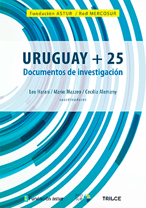

Publicaciones
"Taxing the rich in Latin America: Effects of a wealth tax on revenue and distribution"
De Rosa, M., Vilá, J. (2026) Economic Analysis and Policy.
Leer →"The Inequality (or the Growth) We Measure: Data Gaps and the Distribution of Incomes."
Alvaredo, F., De Rosa, M., Flores Beale, I., & Morgan, M. (2025). LACEA Journal.
Leer →"Wealth inequality in Latin America (2000–2020): data, facts and conjectures"
Carranza, R., De Rosa, M. and Flores, I. (2025). Oxford Open Economics.
Leer →"More Unequal or Not as Rich? Revisiting the Latin American Exception."
De Rosa, M., Flores, I., & Morgan, M. (2024). World Development.
Leer →"Wealth inequality in the south: multi-source evidence from Uruguay"
De Rosa, M. (2024). Review of Income and Wealth.
Leer →"Beyond tax-survey combination: inequality and the blurry household–firm border"
De Rosa, M., Vilá, J. (2023) Journal of Economic Inequality.
Leer →"Dissecting Inequality-Averse Preferences."
Bérgolo, M., Burdin, G., Burone, S., De Rosa, M., Giaccobasso, M., Leites, M. (2022). Journal of Economic Behavior and Organization.
Leer →"Falling inequality and the growing capital income share: Reconciling divergent trends in survey and tax data"
Burdín, G., Vigorito, A., De Rosa, M., Vilá, J. (2022). World Development.
Leer →"Too little but not too late: nowcasting poverty and cash transfers' incidence during COVID-19's crisis."
Brum, M., De Rosa, M. (2021). World Development.
Leer →"Digging Into the Channels of Bunching: Evidence from the Uruguayan Income Tax."
Bérgolo, M., Burdin, G., De Rosa, M., Giaccobasso, M., Leites, M. (2021). The Economic Journal.
Leer →Medición de la desigualdad mediante la integración de fuentes de datos.
Alvaredo, F., De Rosa, M., Flores Beale, I., & Morgan, M. (2025). CEPAL.
Leer →Taxing the rich in Latin America: revenue and distributional effects of a wealth tax.
De Rosa, M., Vilá, J. (2024). IECON.
Leer →On Capital: an essay on inequality, capital and value theory.
De Rosa, M. (2022). IECON.
Leer →How do Top Earners Respond to Taxation? Evidence from a Tax Reform in Uruguay
Marcelo Bergolo, Gabriel Burdin, Mauricio De Rosa, Matias Giaccobasso, Martin Leites, Horacio Rueda (2022). SSRN.
Leer →Inequality in Latin America Revisited: Insights from Distributional National Accounts.
Mauricio De Rosa, Ignacio Flores, Marc Morgan (2020). World Inequality Lab.
Leer →Sistemas tributarios alternativos y su impacto en la distribución del ingreso y en la oferta laboral: Una aproximación comportamental para el caso uruguayo
Mauricio de Rosa, Fernando Esponda, Satiago Soto (2011). Dialnet.
Leer →
Uruguay +25. Documentos de investigación (2014)
Distribución del ingreso, mercado laboral y educación. Un análisis para 1986–2012.
Arim, R.; De Rosa, M.; Vigorito, A.
Fundación Astur–Trilce, Montevideo. Red Mercosur de Investigaciones Económicas / Cooperación, Uruguay.
Harari L.; Mazzeo M.; Alemany C. — Págs. 385–398.